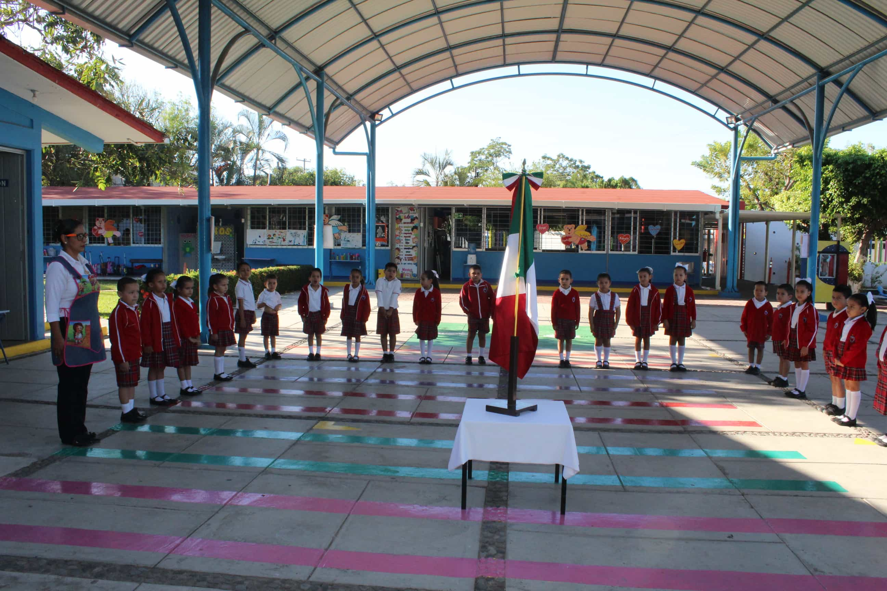

Historia del Colegio
Instituto Cultural Colimense
El 1º de diciembre de 1906 el Colegio abre sus puertas a la niñez de Colima con el nombre de: COLEGIO DEL SAGRADO CORAZÓN. Gracias al tenaz y valiente Sacerdote J. Jesús Ursúa, quien luchó arduamente por un IDEAL: que la sociedad Colimense amara y adorara a Jesús Eucaristía y se EDUCARA INTEGRALMENTE A LA NIÑEZ Y JUVENTUD, con especial atención a la mujer. Trayendo de la Cd. de México un grupo de religiosas de la Orden de ADORATRICES de Guadalupe, para este fin.
En 1914, en el marco de la Revolución se sierran los templos. Estando de Presidente de la República Don Venustiano Carranza visita esta ciudad en 1915 y por la amistad que tenía con la Directora, La Madre Gertrudis Carriedo por haber sido institutriz de sus hijas; visitó el Colegio y le sugirió a la Madre, por la revolución que se vivía en ese tiempo, cambiara el nombre de la institución por COLEGIO DE LA PAZ.
En 1926 se viven momentos vertiginosos de angustia e incertidumbre por la persecución religiosa, bajo el gobierno del Gral. Plutarco Elias Calles, por ello en este año las religiosas son desalojadas, perdiendo para siempre su casa y el Colegio anexo al templo del Sagrado Corazón, calles Ignacio Aldama y 27 de septiembre actualmente. Ellas se dispersan y realojan con familiares y conocidos en Colima, Jalisco y Michoacán. Nunca abandonaron la labor educativa donde quiera que estuvieron.
En 1929, poco a poco fueron regresando la Madres a Colima. Pasada la angustiosa época continúan su vida como siempre, en adoración constante, el Colegio e internado, formando las maestras del futuro ya que era la única escuela Normal del Estado, ubicado en Aldama Nº 232.
En 1934, el Gobernador del Estado Dn. Salvador Saucedo, quien continúa con la persecución religiosa en Colima, ordena clausurar el Colegio. No obstante, las religiosas al dispersarse en diferentes grupos a Guadalajara, continúan heroicamente su labor educativa en grupos aislados y en casas particulares. Así vivieron durante tres años.
1936 y 1937, tiempos de tranquilidad, al fin. Las familias insisten en que el Colegio se abra públicamente. En 1945 inicia la Academia Comercial, la cual brindó a Colima un gran número de competentes contadoras y secretarias. Tiempo de gran auge y en el Plantel y notable influencia en la juventud y sociedad de Colima.
En 1952 el Colegio nuevamente es incorporado al Estado con el nombre de J. Jesús Ursúa, contando con las secciones de Jardín de Niños, Primaria, Secundaria y Academia Comercial.
1954 se coloca la primera piedra en Aldama Nº 226 a costa de grandes esfuerzos, apoyos y del cual disfrutamos por mucho tiempo. Ahora dañado fatalmente por el SISMO del 2002.
De 1961 a 1967 funcionó la Escuela Secundaria Vespertina gratuita con numerosos grupos, siendo la directora la Madre Ernestina Fernández Velasco.
En 1963 el Colegio J. Jesús Ursúa cambia su nombre por INSTITUTO CULTURAL FEMENINO DE COLIMA.
Por este tiempo, se inicia una renovación en la Iglesia con el Concilio Vaticano II, la Orden de Adoratrices Perpetuas del Santísimo Sacramento percibe a través de este acontecimiento eclesial su llamado a responder a los signos de los tiempos, al llamado a la vida misionera y siendo superiora la Madre Angela Escobosa Haas, inician el proceso de transformación de Adoratrices a MISIONERAS DE LA EUCARISTÍA. Ya que como adoratrices eran de vida contemplativa y tenían que estar solicitando cada vez a Roma el permiso para que las hermanas dieran clases, cosa que tardaba bastante en trámites. Esta transformación fue aprobada por la Sagrada Congregación el 25 de mayo de 1972.
En 1971 la Madre Ángela Escobosa Haas, consigue a través del CAPCE la construcción de una Escuela Primaria y Jardín de Niños y el 5 de marzo de ese mismo año se inician las clases en el nuevo edificio de Justo Sierra e Ignacio Sandoval donde actualmente se encuentra.
En 1975 el Colegio se hace mixto, cambiando el nombre a INSTITUTO CULTURAL DE COLIMA. En 1997 se inicia el proceso para cerrar la Sección Secundaria y actualmente continúa la sección de Jardín de Niños y Primaria.